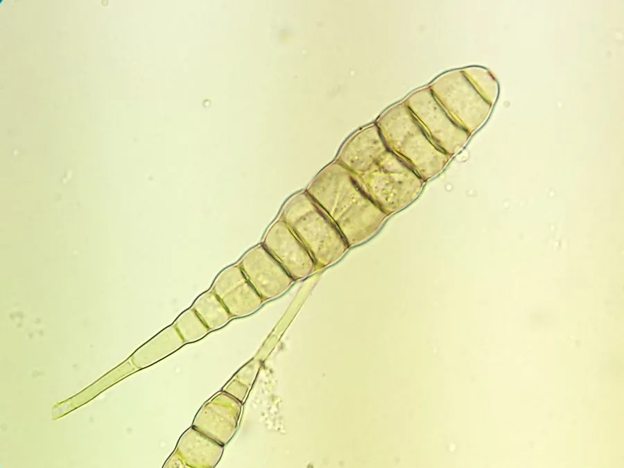

真菌 · 真菌界
马铃薯早疫病菌 Alternaria solani

植物病原真菌，菌落灰褐至黑色，分生孢子具长喙，侵染马铃薯与番茄致早疫病，并能产生真菌毒素。
- 分类
- 门子囊菌门纲座囊菌纲目格孢腔菌目科格孢腔菌科属链格孢属
- 栖息环境
- 马铃薯与番茄田，随病残体在土壤中越冬
- 地理分布
- 世界马铃薯与番茄产区广布，中国各地均有发生
- 保护级别
- 暂无评估；作为重要农业病原广泛存在
物种志
马铃薯早疫病菌的菌落灰褐至黑褐色，绒毛状，生长较快。分生孢子梗暗褐色，分生孢子倒棍棒形、具横纵隔膜，顶端延伸成细长的“喙”，这是链格孢属的典型形态。有性阶段少见。
马铃薯早疫病菌侵染马铃薯、番茄等茄科作物，叶片上形成同心轮纹的褐色病斑，外围黄晕，严重时叶片枯死、块茎减产。它随病残体在土壤中越冬，温暖潮湿时孢子随风雨传播，老叶先发病。该菌还可产生交链孢酚等真菌毒素，被污染的马铃薯与番茄在储存中可能积累毒素，食用发黑腐烂的薯块有风险。防治以轮作、清除病残体、合理施肥与发病初期喷药为主；它不感染人，但毒素问题需重视。
形态与习性
- 菌落灰褐至黑褐色，绒毛状，生长较快
- 孢子分生孢子倒棍棒形，顶端有长喙
- 寄主马铃薯、番茄等茄科作物
- 症状叶片同心轮纹褐斑，外围黄晕
- 毒素可产生交链孢酚等真菌毒素
- 防治轮作、清除病残体、发病初期喷药
趣味知识
- 它的分生孢子顶端拖着一条细长的“喙”，像一根小尾巴，是链格孢属的标志。
- 病斑上有明显的同心轮纹，外围一圈黄晕，很像靶心。
- 它产生的交链孢酚是潜在致癌的真菌毒素，发黑腐烂的薯块不要吃。
- 早疫病多在植株生长后期、老叶上先发，及时摘除病叶能减缓蔓延。